Logos institucionales — Prof. y Mg. Hugo D. Karlau
Archivos oficiales para usar en materiales, sitios y documentos. Las versiones «transparente» son para fondos claros o de color.
ISET N.º 812 (CeRET)
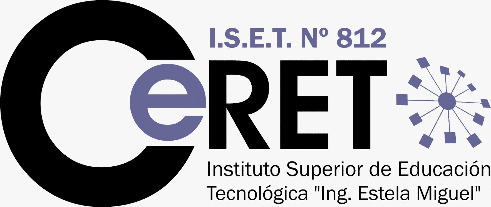
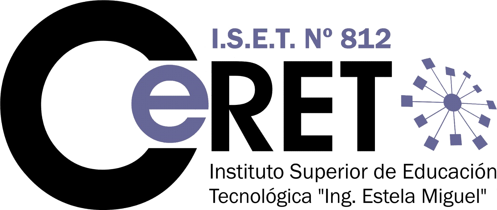
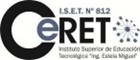
Escuela Provincial N.º 718 «Libertad»
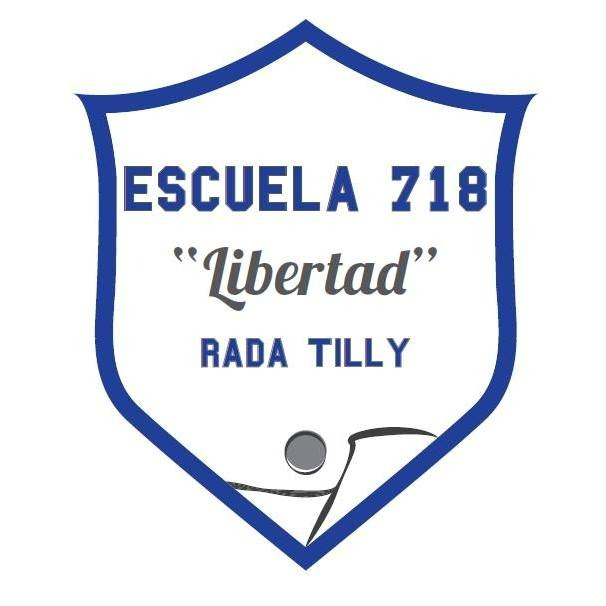
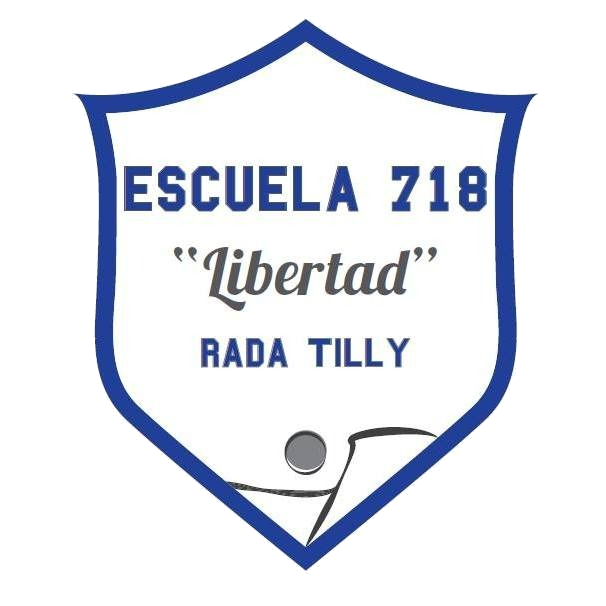
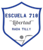
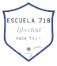
Colegio Universitario Patagónico (CUP)
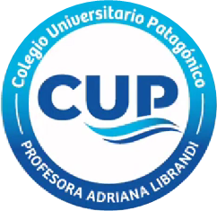
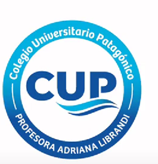
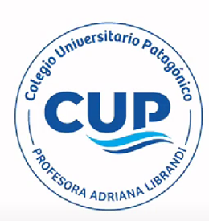
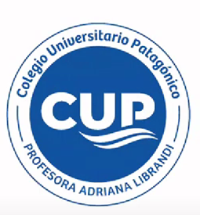
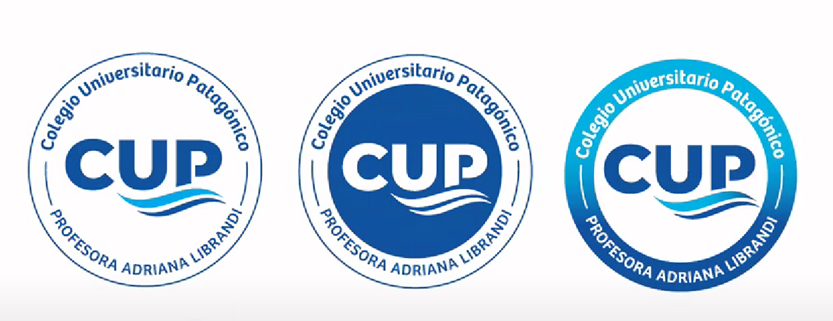
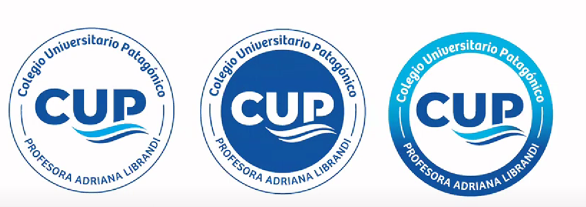
Ministerio de Educación del Chubut
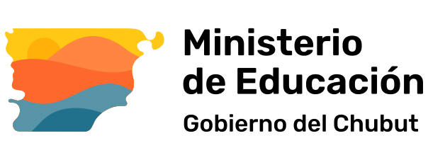
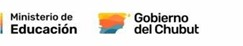
Universidad Nacional de la Patagonia San Juan Bosco (UNPSJB)
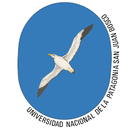